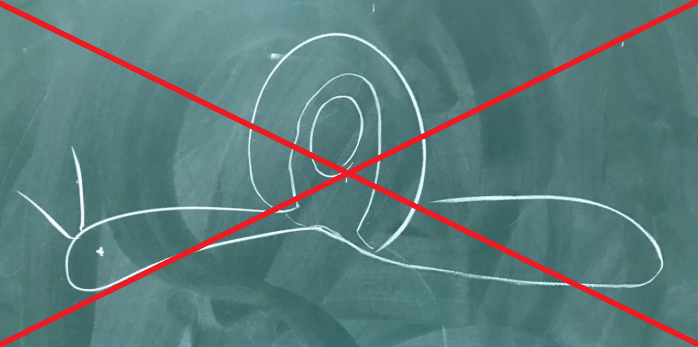

蝸牛
章魚數學筆記本

一年級(上)
微積分(一)
數學導論
基礎機率與統計
資訊科學概論
一年級(下)
微積分(二)
矩陣理論與應用
程式設計
數學軟體入門
基礎數論
二年級(上)
高等微積分(上)
網際網路實務
多變量微積分
線性代數(上)
機率論
二年級(下)
高等微積分(下)
物件導向程式
微分方程
線性代數(下)
統計學
三年級(上)
代數學(上)
離散數學
數值分析
分析專題
微分方程專題
資料結構
數理財務經濟
數理統計
財務經濟導論
複利數學
三年級(下)
統計專題
代數學（下）
複變函數論
高等線性代數
實變函數論圖論
資料處理與分析數學
軟體入門
統計專題
衍生性金融商品
資料處理與分析
數學軟體入門
四年級(上)
專題研究(一)
離散專題
數學專題
應用代數
統計方法
財務數學導論
四年級(下)
專題研究(二)
數學規劃
偏微分方程
拓樸學
台東大學應用數學系江玟嶸
Email信箱
Address:臺東市大學路二段369號一宿A547
Phone: 0918274136